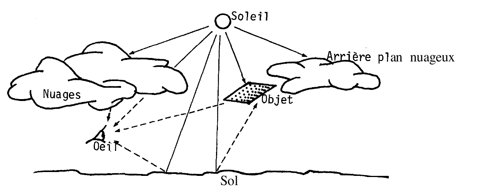

Les modèles s'inspirant des données psychophysiologiques (Note technique n° 10, GEPAN)
2.1. Caractère analogique de la perception
Un exposé, même succinct, des données de la physiologie dans le domaine de la perception sortirait largement du cadre du présent
travailLe lecteur peut consulter un des nombreux manuels existant à ce sujet, p.e. KAYSER, 1963 Kayser, C. (Ed.): Physiologie
II : Système nerveux, muscle, Paris, Flammarion, .
Cette remarque s'applique d'ailleurs à tous les domaines que nous présenterons. Nous rappellerons simplement que la
physiologie sensorielle a montré, depuis longtemps, le caractère analogique de la relation entre les paramètres du
stimulus, la réaction des récepteurs sensoriels et l'influx nerveuxEn informatique, on parlerait
de « transformation » de l'information : changement de support qui conserve la sémantique..
L'énergie physique ou chimique émise par un stimulus est ainsi traduite en une énergie électrique complexe. Par
exemple l'amplitude et la durée du potentiel électrique transmis par le récepteur sensoriel, sont fonction de
l'intensité et de la durée de la stimulation. Cette énergie électrique est acheminée par les voies nerveuses, entre
les récepteurs sensoriels et le système nerveux central.
A première vue, ces données fondamentales de la psychophysiologie semblent étayer aisément un modèle linéaire,
moléculaire, passif, de la perception. En outre, on pourrait prêter à ces données l'ambition de montrer l'existence
d'une perception « vraie », enregistrant une réalité objective ; c'est-à-dire qu'au niveau des récepteurs
sensoriels, la perception est une copie exacte du stimulus, limitée simplement par les probabilités physiques des
sens.
L'analogie avec les instruments qui transcrivent certains paramètres sur un support physique est évidente ; un
appareil photographique, par exemple, transcrit selon certaines lois géométriques et physiques les ondes lumineuses
émises par un stimulus, avec des limites connues : bande passante, sensibilité, grain…
De la même façon, les données de la physiologie pourraient permettre de penser que, par exemple, l'oeil humain fixe
les ondes lumineuses selon des lois et des limites uniquement géométriques et physiques.
2.2. Remarque
Une telle affirmation, généralisée à tous les récepteurs sensoriels, serait d'une importance capitale pour le
problème qui nous intéresse : le témoignage de PANPhénomènes Aérospatiaux Non-identifiés..
Ajoutons, par exemple, deux autres propositions ; l'une certifiant la fidélité d'une mémoire à long terme,
inconsciente, des paramètres fixés au moment de la sensation, la deuxième attestant la fiabilité de certains moyens
de remémorisation : hypnose, polygraphe, reconnaissance,
reconstitution…
Ces trois propositions réunies justifieraient la possibilité d'obtenir toujours d'un témoin un compte-rendu fidèle d'un événement antérieur.
Mais, cette possibilité repose entièrement sur une certaine idée de la réception sensorielle : celle-ci fournirait
une copie exacte des paramètres physiques du stimulus, autrement dit, procèderait à un codage analogique passif, ne
tenant compte que des caractéristiques physiques du stimulus.
2.3. Limites du caractère analogique
Les données mêmes de la psychophysiologie permettent de rejeter cette conception ; ces données montrent que
l'information fournie par les récepteurs sensoriels n'est pas (toujours) le simple résultat d'un codage analogique
des paramètres physiques du stimulus. Deux exemples suffiront :
- Les potentiels électriques captés au niveau des premiers relais synaptiques (sortie des récepteurs sensoriels)
peuvent être augmentés, réduits ou supprimés par l'attention ou l'émotion du sujet (cf. p.e. DAVIS, 1964 Davis, H.: Enhancement of evoked
cortical potentials in humans related to a task requiring a decision, Science, vol. 145, pp. 182-183, - COQUERY,
1972 Coquery, J.-M.: Fonctions motrices et contrôle des messages sensoriels d'origine
somatique, J. Physiol., vol. 64, pp. 533-560, ).
- On peut observer, déjà au niveau des récepteurs sensoriels, une structuration particulière des différentes
cellules réceptives, qui dépasse l'image physique du stimulus. Cette structuration montre, par exemple, la
séparation d'une image de son fond (cf. GREGORY,
1970 Gregory, R. L.: The intelligent eye, New York, McGraw-Hill, ).
En général, et contrairement à l'hypothèse signalée, les données psychophysiologiques semblent montrer que la
principale fonction de la réception sensorielle n'est pas de copier le stimulus, mais de mettre l'accent sur les
« nouveautés » que ce stimulus comporte. Il apparaît dès lors que la fonction adaptative de la perception s'exprime
parfaitement en termes psychophysiologiques.
De surcroit, les données psychophysiologiques sont, contrairement aux apparences, parfaitement compatibles avec les
modèles moléculaires et en bouclePrésentés au paragraphe
1.5..
Outre les deux exemples cités, rappelons une autre donnée : les formations réticulaires sont un réseau de fibres
nerveuses qui s'étend de la moelle au Thalamus. Le but de ce réseau est de réguler le sommeil et la veille de
l'organisme. Pour cela, ces formations inhibent plus ou moins les messages sensoriels qui cheminent vers le cerveau.
Mais au-delà d'une régulation grossière de la quantité de l'information reçue par le système nerveux central, les
formations réticulaires semblent exercer un contrôle sélectif sur les sensations. Elles seraient alors les
responsables du phénomène bien connu de la mère qui peut dormir malgré des bruits banals intenses, mais qui se
réveille au moindre pleur de son bébé, ou tout autre bruit qui lui ressemble vaguement.
Nous retrouvons dans cet exemple des caractéristiques sélectives et probabilistes qui se marient mal avec un modèle
linéaire et moléculaire de la perception.
2.4. Remarque
Nous ne fermerons pas ce sous-chapitre sans signaler que certains spécialistes du témoignage accordent une très
grande importance aux phénomènes physiologiques. Un psychologue américainR.F. HAINES est spécialiste des problèmes de perception humaine à la NASA. a réuni,
dans un récent ouvrage (HAINES, 1980 Haines, R. F.: Observing UFOs, Chicago, Nelson Hall Inc., ) ces travaux sur le témoignage « OVNI » ;
la plupart sont des considérations neurophysiologiques, ou simplement physiques.
Par exemple, l'un des chapitres, aborde une réflexion sur les différentes sources de l'intensité lumineuse reçue
par l'oeil humain. En effet, comme le montre l'illustration ci-dessous, la luminosité apparente d'un objet est le
fruit des interactions entre les lumières émises et les lumières réfléchies émanant de l'objet observé, les nuages,
la terre, le soleil…
Figure 2.1. - Extrait de HAINES, 1980 - page 139

L'intérêt de ce type de réflexion va de pair avec la possibilité de capter le message sensoriel que véhiculent les
voies nerveuses au moment de l'observation.
Mais lorsqu'on ne dispose que du souvenir verbal de la luminosité de l'objet observé, le problème de l'évaluation
de cette luminosité ne se pose plus seulement en termes d'interactions physiques, ou de caractéristiques
fonctionnelles des récepteurs sensoriels. Les études sur la perception humaine ont montré que la luminosité retenue
par un observateur n'est pas celle qui est reçue par son oeil, mais le fruit d'un calcul qui tient compte, d'une
part de toutes les sources de lumière, d'autre part de l'hypothèse qu'il fait sur l'objet observé. Nous y
reviendrons.
2.5. Conclusion
Ainsi, d'une manière générale, les études sur la perception faites dans le domaine de la psychophysiologie sont en
même temps les plus précises et les moins utilisables dans le domaine du témoignage humain et de la perception en
général : les plus précises parce qu'elles sont les seules à pouvoir prétendre capter les réponses du processus
perceptif sans l'interaction des processus cognitifs, mnémoniques… Mais les moins utilisables dans le domaine de la
perception parce que ces études montrent, et en même temps négligent, le problème fondamental de la perception : la
signification que le sujet attribue au stimulus reçu.